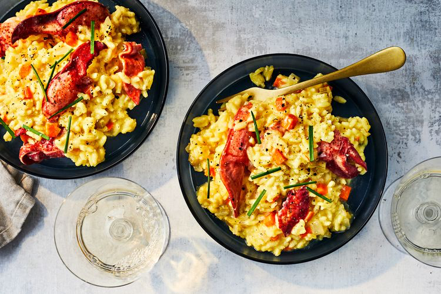

Lobster Risotto

Description
A small pinch of saffron goes a long way in imparting a vibrant golden hue
and floral fragrance to this creamy lobster risotto. Sommelier Tonya Pitts
recommends pairing it with a white Bordeaux.
Ingredients
- 3 cups bottled clam juice (such as Bar Harbor)
- 3 cups water
- 2 tablespoons olive oil
- 1 cup yellow onion, finely chopped
- 1/2 cup carrot, cubed (1/8-inch pieces)
- 1/2 cup celery, cubed (1/8-inch pieces)
- 1 1/2 cups Arborio rice, uncooked
- Pinch of best-quality saffron threads (such as Diaspora Co.)
- 1/2 cup (4 ounces) dry white wine
-
1 pound lobster meat (such as Luke's Lobster), cooked (about 3 cups)
- 1 teaspoon kosher salt
- 1/4 teaspoon freshly ground black pepper
- 3/4 cup (about 3 ounces) Parmesan cheese, grated
- Fresh chives, sliced, for garnish
Steps
-
Cook clam juice and 3 cups water in a medium saucepan over medium-low,
undisturbed, until steaming, about 10 minutes. Reduce heat to
medium-low, and keep warm.
-
Meanwhile, heat oil in a large saucepan over medium-high. Add onion,
carrot, and celery; cook, stirring often, until slightly softened, about
5 minutes. Add rice and saffron; cook, stirring constantly, until rice
is toasted, about 1 minute. Add wine; cook, stirring often, until almost
absorbed, 30 seconds to 1 minute. Reduce heat to medium.
-
Add 1 cup hot clam juice mixture to rice mixture; cook, stirring often,
until almost absorbed, 2 to 3 minutes. Continue adding clam juice
mixture, 1/2 cup at a time, stirring until clam juice mixture is almost
absorbed after each addition, until rice is al dente and mixture is
creamy, 15 to 20 minutes.
-
Remove rice mixture from heat; gently stir in lobster, salt, and pepper.
Gradually stir in Parmesan cheese. Stir in additional clam juice
mixture, a splash at a time, to loosen risotto, if needed. Discard
remaining clam juice mixture. Divide risotto evenly among 4 bowls;
garnish with chives.